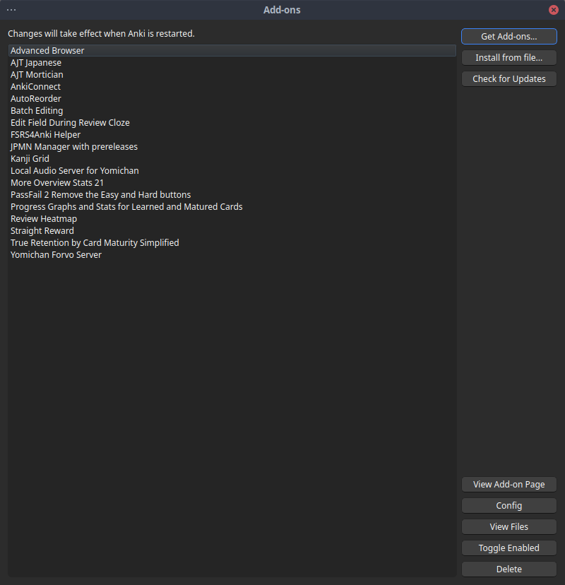
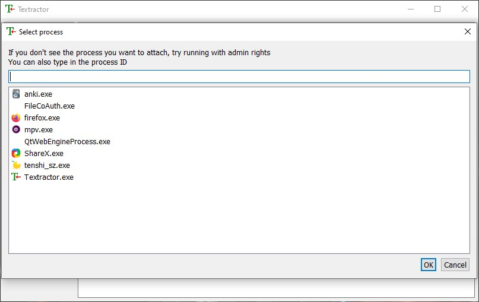
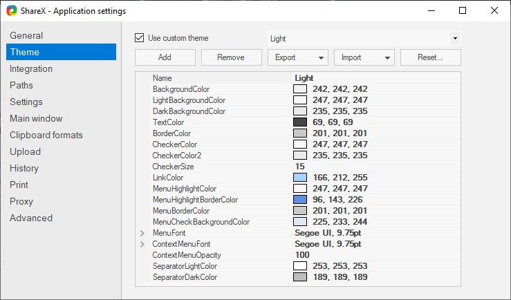
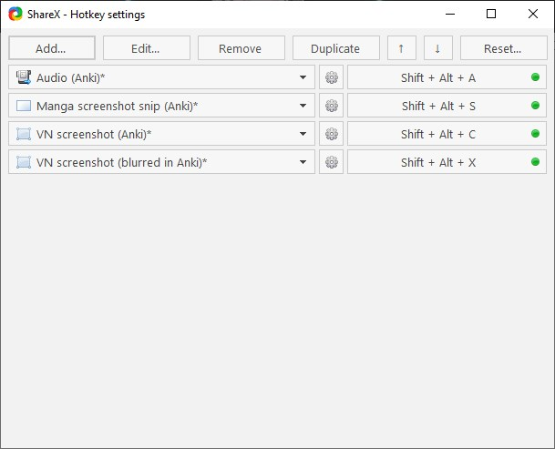

Setup
Japanese Learning Setup
This section is concerned with setting up the various tools we will use to learn Japanese. The most important of which are Anki and Yomitan. This section is divided in three subsections: Anki, Yomitan and Mining. The names should be self-explanatory if you've read the main guide.
I use EndeavourOS (an Arch derivative) and Windows 10 in a dualboot setup. I do most everything Anki-related on EndeavourOS and most mining on Windows 10. This setup hasn't been tested elsewhere. If you want to mine visual novels on Linux I suggest looking at this page.
Anki setup
The first tool we are going to set up is Anki. But first, what exactly is Anki?
Anki, a spaced-repetition system
The idea behind Anki is probably older than the Internet itself. A very popular method to memorize anything is to use physical flashcards. You take a piece of paper, write a question, or more generally a prompt in the front of the card and you write the answer on the back of the card. Put simply, Anki is a virtual library of flashcard decks. It can be used to learn just about anything that requires memorization, 暗記 anki being the Japanese term for memorization. This is not only useful to language learners but also to geography enthusiasts and med school students.
Unfortunately, vanilla Anki (i.e. Anki without additional plugins or a specialized setup) suffers from a few issues. Those issues are very well documented and you should read this article to see what they are. My favorite Anki setups are this one and that one. In the following, I will try to summarize things for people who don't want to have to read through various guides and want a simple mining setup in the vein of the second guide above, with a few different additions of my own. I do not claim any originality in this setup, it is simply an amalgamation of various resources I have used to create my own setup that I like. With that being said, let's get on with it. This guide is made from the perspective of a Windows user. I have no idea how MacOS works and I cannot help with it. I also use Linux (more specifically EndeavourOS, an Arch-based distro) but I do most of my reviews in Windows on my dualboot setup. Hopefully the guide is still useful to you if you're not using a similar setup!
Installing Anki
To install Anki on Windows, head to the Anki homepage and click on the blue download button. If you're on Linux, your distribution should have an Anki package.
Follow the instructions for your system and make sure you are getting the latest version. There are two possible options to download Anki: qt5 and qt6. Get the qt6 version, it's better and the add-ons we are using are compatible.
Changing your settings
The last thing to do before we can use Anki to review our cards is to change the vanilla settings. You can find my preferences settings detailed here. To access this menu, go to the Tools tab and then Preferences.
The second part of the settings is the deck settings, which you can use on either Core 2k or your mining deck, depending on if you've finished Core/Tango already. You can find the deck settings here. An explanation of why we add a learning step (which is the main difference with vanilla Anki) can be found here along with other interesting points on why we set up Anki the way we do.
Installing fonts
I highly suggest you find a set of Japanese fonts that you really like. I personally use the Noto Japanese family of fonts. It is ultimately up to you to decide, but I recommend going for fonts that you won't mind looking at for a long amount of time, because you will. To install them in Windows, just right click on them and install.
Installing basic add-ons
Download all the add-ons I have here. To do this, go in Anki > Tools and then View Files on the bottom left. This opens a folder. Unzip the add-ons above and drop them all in this folder. If you just want to see a visual list of all add-ons I have, scroll down.
Anki is customizable in two ways: The first one is the settings menu that can be found in the app itself, the second one is additional plug-ins (usually called add-ons) that you can find on Anki's add-on page. The first issue with vanilla Anki is the "ease problem" discussed in here. The problem arises when one misses a card repeatedly which lowers the ease factor on that card. Concretely, this means that you will see the card more and more, and on vanilla Anki, the only way to push the ease factor back up is to press "Easy". But it is not clear why this distinction is meaningful, and it is not clear either what "Hard", "Good" or "Easy" represent when learning a language. We are going to sidestep the problem entirely by changing the way Anki deals with ease. To do this, we are going to use the following two add-ons:
General add-ons
These add-ons are useful for everyone and every deck.
Advanced Browser
As the name implies, this gives the browser featured more functionalities.
Advanced Copy Field
Lets you replace and copy things from your Anki fields. It also lets you create some cool custom templates from the fields themselves.
AutoReorder
AutoReorder is an add-on that lets you re-order your new cards based on a frequency field. It will be used in conjunction with Marv's frequency sorter to allow one to use frequency dictionaries to mine effectively and have the most frequent new words come up first.
Batch Editing
Batch Editing lets you edit entire batches of cards at once. This is very useful when you want to add something to every card in your deck in one go, for instance a picture.
Edit Field During Review (Cloze)
Edit Field During Review lets you edit a card as you're reviewing it.
More Overview Stats 2.1
More Overview Stats 2.1 gives you more stats to the deck overview.
Pass/Fail
This add-on is optional. It removes the "Hard" and "Easy" buttons entirely, which is more of a matter of taste. Personally, I use it.
Progress Graphs
Adds cool progress graphs to help you understand your Anki usage better.
Study Time Stats
Adds some time statistics on the main Anki window which is useful if you want to see how much time you spent on Anki this week for instance.
Review Heatmap
Review Heatmap lets you see your progress on the main page of Anki by showing you what days you did Anki and how many reviews you did.
Straight Reward or FSRS4Anki Helper
Straight Reward makes it so that hitting "Hard", "Good" or "Easy" is considered a success, and chaining together successes increases the ease factor, thus making you see the card less often (since you keep getting it right, you don't need to see it as much). This makes it easy to fix a bad day where you hit again on the same card multiple times. If you are using FSRS (see below), this has no effect and is not needed.
If you are using FSRS, install FSRS4Anki Helper instead. It lets you customize some settings for FSRS.
True Retention by Card Maturity Simplified
This add-on gives you accurate information about your retention on mature and young cards.
Japanese-specific add-ons
These add-ons are directly related to Japanese learning and have no direct use for anything else.
AJT Japanese
AJT Japanese will be used to generate furigana readings on words later on when we get to mining. Furigana is basically the spelling of kanji you can write on the kanji to explain to someone who has never read that kanji how to read it.
AJT Mortician
AJT Mortician is used to deal with cards that you fail consistently during the same review session. This usually indicates that the card is giving you particular trouble, and it might be worth spending some time on it outside of Anki (or in a custom study session) to memorize it. Don't forget to check "Count from Daystart."
AnkiConnect
This is by far the most important add-on for mining. It allows one to use Yomitan to create cards automatically, more on this in the mining section below.
Kanji Grid Kuuube
Kanji Grid is a pretty old but reliable add-on that lets you create a grid of kanji, ranking them based on how well you know them. It is not strictly necessary, but seeing the grid fill up as you learn new kanji is uniquely satisfying. The 2.3.x Anki updates rendered the original add-on irrelevant but thankfully Kuuube made the add-on compatible with the newer Anki versions. They also added new features and made everything more stable.
Yomichan Forvo Server and Local Audio Server for Yomichan
Lastly, Yomichan Forvo Server and Local Audio Server for Yomichan are used to add custom audio from Forvo to Yomitan on your local machine, letting you access audio almost instantaneously and fixing some of the issues with the original audio files in Yomitan (usually coming from JapanesePod101, which has some errors). Simply follow the steps listed on this page to get it up and working.

{kind=link}
Enabling FSRS
FSRS is an alternative to the SM-2 algorithm for scheduling in Anki. I highly, highly suggest you use it. To do this, provided you are on Anki 23.10 or higher, you simply need to open the deck options and scroll down to Advanced section. There, enable FSRS. I highly suggest you read this tutorial to get acquainted with the algorithm and see how it works.
Anki setup checklist
- Install Anki.
- Change the settings.
- Install fonts.
- Install add-ons.
- Optionally, install FSRS.
Yomitan Setup
Now that we have Anki set up, it is time to focus on the second crucial tool we will use to learn Japanese: Yomitan. Yomitan is a fork of the old Yomichan browser plugin you can install in Firefox or Google Chrome to use Japanese dictionaries while browsing the Internet. This means that you can look up words on the fly simply by hovering over them and pressing a certain keybinding (or none at all). The original project was sunset by its original author and the team at TMW decided to pick up the slack. Thus Yomitan was born.
Installing Yomitan
To install Yomitan, grab either the chrome version or the firefox version Once it is installed a guide should be presented to you. Please read it to see how Yomitan works.
Adding Dictionaries
Yomitan requires third-party dictionaries to function. To install the dictionaries, go to Dictionaries > Configure installed and enabled dictionaries... > Import.

The dictionaries will take a bit of time to import, it is normal.
We are going to use the following dictionaries.
Japanese-English dictionaries
We are going to use three dictionaries here. The first one is a normal Japanese-English dictionary that has different forms, synonyms and antonyms as well as example sentences. The second one has examples for different meanings of the word as well as example sentences. The third one has Japanese names.
Jitendex or JMdict (examples)
JMdict is a J-E dictionary developed by StephenMK. Jitendex is a continuation of this project aimed at supporting other app formats than just Yomitan. Some users prefer the look of the first, older dictionary. I suggest you download both, try both and see which one you prefer. You can see a comparison directly here. I personally recommend Jitendex.
斎藤和英大
A very useful J-E dictionary that has many different examples of the word being used in different idioms and different contexts.
JMnedict
A Japanese name dictionary also made by StephenMK. Since Japanese names tend to have different kanji readings, this is heavily recommended.
Grammar dictionaries
These dictionaries help us noticing and understanding grammar patterns.
Dictionary of Japanese Grammar
日本語教師
Japanese-Japanese dictionaries
These dictionaries are monolingual, Japanese-Japanese dictionaries.
三省堂 8th Ed
新明解 8th Ed
大辞林 4th Ed
旺文社 11th Ed
デジタル大辞泉
明鏡 2nd Ed
Specialty J-J dictionaries
These dictionaries are also Japanese-Japanese but they focus on a specific topic like common expressions, differences between words, classical Japanese and dialects.
使い方の分かる
実用日本語表現v2
Weblio古語辞典
全国方言辞典
漢字ペディア同訓異義
Pixiv Light
Kanji dictionaries
These dictionaries will help us understand kanji, giving us most common words for a specific kanji, stroke order and other statistics.
Kanjidic
JPDB Kanji
Kanji Jitenon
Wiktionary
Pitch accent dictionaries
These dictionaries give us pitch accent information.
アクセント辞典v2
NHK2016
Frequency dictionaries
Lastly, these dictionaries give us frequency informations for various words. This will be useful to rank new words by frequency.
Wikipedia Kanji Frequency
JPDB Frequency
Narou Frequency
Novels Frequency
VN Frequency
Anime & J-drama Frequency
Wikipedia Frequency
BCCWJ
CC100
IR
Other possible dictionaries
These will be all the dictionaries we will use, however you can see other interesting dictionaries in this repo. Most notably, if you speak German there is a Japanese-German section thanks to Julian. Another place to look for dictionaries is shoui's collection.
Configuring Yomitan
You can simply get my settings file here. To import it, go under Backup and Import Settings. I can not guarantee the rest of the setup works if you do not do this, because some important things require different settings in Yomitan, notably the mining portion of the guide.
As I have said before, I suggest you take some time to read the startup usage guide and see how Yomitan works for yourself. After this, you can disable it showing up every time you open your browser by ticking off Show usage guide on startup in the Yomitan settings menu (press on the cog wheel) under General. Here are a few more options you can take a look at if you would like to.
Scanning
You can change the default modifier key from Shift to something else if you'd rather. You can also choose No key, which automatically looks up any Japanese it comes across for you without having you press any button. It can make looking up a specific word in a sea of Japanese words a bit tedious, but it also doesn't require you to press Shift all the time. You're free to choose whichever option you prefer, I use Shift.
Popup
Here you can decide to use Allow scanning popup content or not. It lets you scan words in the definitions of your dictionaries which is useful when you're reading monolingual dictionaries in Japanese. If you enable it, you might want to change the number in Maximum number of child popups to something higher, like 3-5.
Audio
You can adjust the volume audio if it is too loud for you. You can also add auto-play which immediately plays the audio of any word you look up. This is useful when using J-J dictionaries, but I personally don't use it. I highly suggest you set up a local audio server for Yomitan following this guide if you haven't already done so.
Yomitan setup checklist
Mining
If you did everything right in the previous section, you should be able to look up words in Japanese with Yomitan. This section will cover everything you need to know to setup a proper mining experience. Mining is usually something one does after going through a vocabulary deck like Core2.3k, but some people start a mining deck halfway through Core and there's nothing wrong with that. It is up to you, I recommend going through Core first as it doesn't really take too much time in the grand scheme of things. You can and should start immersing in native content from day one, but it'll make more sense after you've memorized some vocabulary. Here are a few remarks before we go on to build our mining deck.
Setting up Anki and Yomitan for mining
In this section, we discuss various Anki card notes, install one and setup Yomitan.
Choosing a note type
There are multiple note types available to Japanese learners. The most popular ones are listed on Aquafina's alternatives list. We are going to use Arbyste's fork of Aquafina's jp-mining note. Sadly, the original maintainer of this note type went silent, in the meantime Arbyste is maintaining it. To install it, start by reading the preface. Then, follow the instructions here and make sure you set up Yomitan accordingly unless you're using my Yomitan settings, in which case you should be good to go. Everytime you're done mining for the day, remember to use the AutoReorder add-on to re-order your cards based on frequency. It can also do that automatically on startup which is easier. To make sure it is working, open the config file of the add-on and make sure that the name of the field you are trying to re-order from is "FrequencySort", provided you are using Aquafina's mining note as well. If you are not, simply use the name of your frequency field, whatever it is.
Using Marv's frequency sorting tool
If you have imported my Yomitan settings, you don't need to change anything in Yomitan, but you do need to change your deck name to Mining. If you do not call it exactly Mining, the frequency tool won't work. If for some reason you would like to call it anything else, then you need to go to Tools > Add-ons and then double click on AutoReorder. It should open a config file and you can change the name of the deck (which by default is Mining if you imported my add-ons directly) to whatever you want to call it.

On the choice of your immersion materials
There are many different kinds of native content you can use for immersion. Here are a few popular ones: visual novels, (light) novels, (YouTube) videos, Japanese TV, podcasts, music, video games. The best one will be the one you don't mind spending lots of time on. I suggest picking up two at the very least: a reading-based one and a listening-based one. Of all the choices above, my favorite for a beginner is by far visual novels.
The reason I prefer visual novels over basically any other kind of medium is due to how complete it is: you get a picture, a complete sentence and voiced audio (usually) at the same time, so it's nice to look at, you are reading and listening at the same time and the progress is easy to track due to the game nature of a visual novel (usually abbreviated VN). One caveat is that most visual novels are for adults due to varying amounts of sexual content in them. Some very popular visual novels have none, and there are all-ages version as well. Overall, visual novels are fun, exciting and great for immersion.
This is not to say that other reading materials are bad however, quite the opposite in fact. Ideally, you would expose yourself to a wide variety of Japanese reading, from visual novels to Wikipedia articles to classics and newspaper articles. But if you are going to choose only one thing for your reading needs, I'd make it visual novels (provided you like them). Remember, the most important part is interest, otherwise it will be extremely hard to make reading a habit. That being said, do remember that most visual novels will require you to run them with a Japanese locale. You can use Locale Emulator to avoid changing your system settings or you can create shortcuts with this tool. Either way, let's move on.
Visual novel setup
In this section, we get all the tools we need to mine from visual novels.
Textractor
The first step is to get a texthooker. A texthooker is a tool that lets you hook the gametext into your browser to let you use Yomitan on it to mine. The recommended texthooker nowadays is Textractor.

You can download it here. Just get the latest version and run the .exe file. Next, open Textractor and go to Extensions. If you don't see Textractor-Sender, download it from here and add the .xdll file to your extensions by right-clicking on the list.

Once this is done, we can now hook the text. To do this, start by selecting a process on the top left and look for your visual novel.

{kind=link}
Once this is done, simply click on your visual novel to go to the next frame. Then you click on the upper bar (where console is written) and you cycle through the options until you find one that has the text on that line in the visual novel, and nothing else.

exSTATic
Next, we need to choose a way to get the hooked text into your browser. There are two ways to do this: clipboard inserters and websockets. The second option is cleaner and generally less error-prone. We are going to use exSTATic which you should be able to find in your browser extensions page. Otherwise, you can follow the instructions here. Once you have installed the browser extension, you should open the tracker page and I suggest you bookmark it because this is where you will be doing your mining.

ShareX
Finally, we need to get a tool to extract the picture and (if any) the audio of the sentence you're mining from. This tool is ShareX. First, start by importing my settings. To do this, go in Application Settings on the left (notice the theme might be different):
{kind=link}
After this is done, go into Settings and then Import... and use my settings file:

After this is done, if you go back to the main menu you should be greeted with the following:

If you want a different theme (I use the Dark theme for instance), you can go into Application Settings and then Theme:

{kind=link}
Now, let's go back to the left and click on Hotkey settings. This brings up the following menu:

{kind=link}
This has four options. The first one is Audio (Anki), which lets us record some audio and have it be sent directly to the collection.media folder. This means that if you mine a card and you record some audio right afterwards, it'll send what you recorded in the audio field of the mining deck. This is useful if you want to record a voiced line in your visual novel for instance. The second option is for a snipping screenshot which is useful when reading manga. The last two options are what we want for visual novels. The third option captures the picture from the visual novel and puts it in the field of the new card. The fourth option does the same, but also blurs the picture, provided you are using my Yomitan settings.
Sadly, if you try to record audio or take a screenshot right now, it will fail for two reasons:
- The collection.media folder is not the same for you and me.
- We have no tool to record audio.
Let us start with the first issue. Start by clicking on the wheel next to each option of the options above: Audio, screenshot, etc. This opens up the following menu:

Notice the blurred parts in the bottom (it shouldn't be blurred on your end). This is my collection.media folder path. You need to change it to yours. The first part is your Windows username, the second is your Anki profile name. You can also type %appdata% in the Windows search bar, press Enter and find your collection.media folder path directly that way. Either way, rewrite the path for each of the four options. It should look like this:

This fixes the first issue. To fix the second, click on the cog wheel next to the Audio option in the Hotkey settings. Next, go to Screen recorder:

Next, open up Screen recording options... and click on Install recorder devices. Once this is done, check that Video Source: is set to None and Audio Source: is set to virtual-audio-capturer:

You can now quit this screen and you should have a functional ShareX setup. If you have a mouse with external buttons, I highly recommend using Xelieu's one-click script. To use it, install AutoHotKey. Once you want to use it, simply open up AutoHotKey and launch the script above (double-click on it). This allows you to use the Screenshot and Audio shortcuts with your mouse. On my mouse, the upper most button does Screenshot (VN) and the lowermost button does Audio (Anki).
Mining recap
To mine, we now open up our visual novel, Textractor, the exSTATic tracker page and ShareX. Follow the steps in the Textractor section to get the text hooked on the exSTATic tracker page, and use Yomitan to mine words by clicking on the big green button in the pop-up window. Once this is done, take a screenshot of the visual novel with either Shift+Alt+C or your mouse button if using Xelieu's hotkeys. If the line is voiced and don't mind spending the time to grab the audio, record the audio with either Shift+Alt+A or the other mouse button. Congratulations, you have mined a word from your visual novel!
Other setups
Here is a quick list of a few other mining setups that are available.
Manga setup
To mine from manga, you will need some kind of OCR tool. The best one we have so far is by far mokuro. If you do not want to install it (or you can't), you can check the list of manga that has already gone through mokuro here. Then you can simply use Yomitan on the text bubbles and mine that way. I also suggest using ShareX to grab pictures of the volume you're reading with the snipping feature.
Novel setup
To mine from (light) novels, I suggest using ッツReader. Simply upload an HTML/EPUB and start reading. You can read about it here and I highly suggest at least browsing the Usage tab. If you would like to have pictures in your cards, I suggest adding the various pictures in the light novels you're reading to your cards. You can use batch editing to add a picture to many cards at the same time or simply the novel cover.
Listening setup
If you have a video with subs and you would like to mine from it, I suggest using asbplayer. The docs are here.